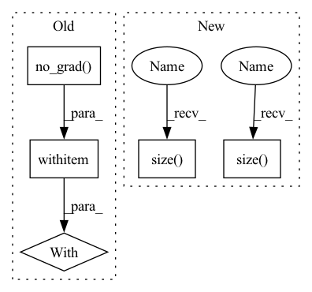

Pattern ID :13626

Before Change
0.97587, 0.97587, 0.97587, 0.97587, 0.97587, 0.97587, 0.97587, 0.97587]])
// When
with to.no_grad():
outputs = self.graph_encoder.forward(features, adjacency_matrix, batch_size)
// Then
self.assertTrue(to.allclose(outputs_expected, outputs))
After Change
// Given
batch_size = 1
features = BASE_GRAPH_NODE_FEATURES.view(1, BASE_GRAPH.size()[0], BASE_GRAPH_NODE_FEATURES.size()[1])
adjacency_matrix = BASE_GRAPH.view(1, BASE_GRAPH.size()[0], BASE_GRAPH.size()[1],)
outputs_expected = to.tensor([[0.98733, 0.98733, 0.98733, 0.98733, 0.98733, 0.98733, 0.98733, 0.98733, 0.98733,
0.98733, 0.98733, 0.98733, 0.98733, 0.98733, 0.98733, 0.98733]])
In pattern: SUPERPATTERN
Frequency: 3
Non-data size: 5
Instances
Fragment ID: 45736521
Project Name: kovanostra/message-passing-neural-network
Commit Name: 12a922782efdb2658116c4996bb050a7025aa822
Time: 2020-05-03
Author: kovanostra@gmail.com
File Name: tests/model/test_graph_encoder.py
M Class Name: TestGraphEncoder
N Class Name: TestGraphEncoder
M Method Name: test_forward(1)
N Method Name: test_forward(1)
M Parent Class: TestCase
N Parent Class: TestCase
M File Name: tests/model/test_graph_encoder.py
N File Name: tests/model/test_graph_encoder.py
M Start Line: 54
M End Line: 63
N Start Line: 54
N End Line: 59
'>
Before Change
p.requires_grad = False
def forward(self, x):
with torch.no_grad():
return self.sobel(x)
class Laplacian(nn.Module):
After Change
@torch.no_grad()
def forward(self, x):
x = self.sobel(x)
if self.use_threshold:
x_thr = torch.quantile(
x.view(x.size(0), 1, -1), 0.80, dim=2).view(x.size(0), 1, 1, 1)
x[x < x_thr] = 0.
return x
'>
Fragment ID: 45736522
Project Name: westlake-ai/openmixup
Commit Name: 1969d56d997a214a2d5f909c64998f458d2009b1
Time: 2022-04-25
Author: 1070535169@qq.com
File Name: openmixup/models/utils/sobel.py
M Class Name: Sobel
N Class Name: Sobel
M Method Name: forward(2)
N Method Name: forward(2)
M Parent Class: nn.Module
N Parent Class: nn.Module
M File Name: openmixup/models/utils/sobel.py
N File Name: openmixup/models/utils/sobel.py
M Start Line: 32
M End Line: 35
N Start Line: 45
N End Line: 51
'>
Before Change
0.97587, 0.97587, 0.97587, 0.97587, 0.97587, 0.97587, 0.97587, 0.97587]])
// When
with to.no_grad():
outputs = self.graph_encoder.forward(features, adjacency_matrix, batch_size)
// Then
self.assertTrue(to.allclose(outputs_expected, outputs))
After Change
// Given
batch_size = 1
features = BASE_GRAPH_NODE_FEATURES.view(1, BASE_GRAPH.size()[0], BASE_GRAPH_NODE_FEATURES.size()[1])
adjacency_matrix = BASE_GRAPH.view(1, BASE_GRAPH.size()[0], BASE_GRAPH.size()[1],)
outputs_expected = to.tensor([[0.98733, 0.98733, 0.98733, 0.98733, 0.98733, 0.98733, 0.98733, 0.98733, 0.98733,
0.98733, 0.98733, 0.98733, 0.98733, 0.98733, 0.98733, 0.98733]])
'>
Fragment ID: 45736524
Project Name: kovanostra/message-passing-neural-network
Commit Name: 12a922782efdb2658116c4996bb050a7025aa822
Time: 2020-05-03
Author: kovanostra@gmail.com
File Name: tests/model/test_graph_encoder.py
M Class Name: TestGraphEncoder
N Class Name: TestGraphEncoder
M Method Name: test_forward(1)
N Method Name: test_forward(1)
M Parent Class: TestCase
N Parent Class: TestCase
M File Name: tests/model/test_graph_encoder.py
N File Name: tests/model/test_graph_encoder.py
M Start Line: 54
M End Line: 63
N Start Line: 54
N End Line: 59
'>
Before Change
p.requires_grad = False
def forward(self, x):
with torch.no_grad():
return self.laplacian(x)
After Change
@torch.no_grad()
def forward(self, x):
x = self.laplacian(x)
if self.use_threshold:
x_thr = torch.quantile(
x.view(x.size(0), 1, -1), 0.80, dim=2).view(x.size(0), 1, 1, 1)
x[x < x_thr] = 0.
return x
'>
Fragment ID: 45736516
Project Name: westlake-ai/openmixup
Commit Name: 1969d56d997a214a2d5f909c64998f458d2009b1
Time: 2022-04-25
Author: 1070535169@qq.com
File Name: openmixup/models/utils/sobel.py
M Class Name: Laplacian
N Class Name: Laplacian
M Method Name: forward(2)
N Method Name: forward(2)
M Parent Class: nn.Module
N Parent Class: nn.Module
M File Name: openmixup/models/utils/sobel.py
N File Name: openmixup/models/utils/sobel.py
M Start Line: 65
M End Line: 66
N Start Line: 94
N End Line: 100